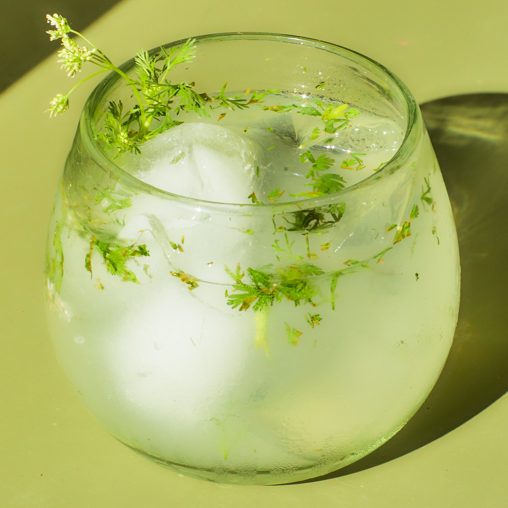

Cilantro Pisco Smash
Aha les git fuckeddddddd up

This cilantro pisco smash is inspired by Malina Bickford's lovage aquavit smash, but here the Scandinavian spirit is swapped out for Peru's iconic pisco. Aromatic, herbal, and subtly sweet, it pairs well with cilantro for a bit of freshness.
The recipe
Ingredients
- 1/2 cup sugar
- 3 Tbsp. cilantro leaves with tender stems, plus more for serving
- 2 Tbsp. fresh lemon juice
- 1 Tbsp. fresh lime juice
- 6 Tbsp. Peruvian pisco
Preparation
- Bring sugar and ½ cup water to a boil in a small saucepan, stirring until sugar is dissolved. Remove from heat and let simple syrup cool.
- Muddle 3 Tbsp. cilantro with lemon juice and lime juice in a cocktail shaker. Add pisco and 2 Tbsp. simple syrup. Fill shaker with ice and shake until well chilled, about 30 seconds. Strain into 2 rocks glasses filled with ice. Garnish with cilantro.
- Do Ahead: Simple syrup can be made 3 weeks ahead. Transfer to an airtight container; cover and chill.